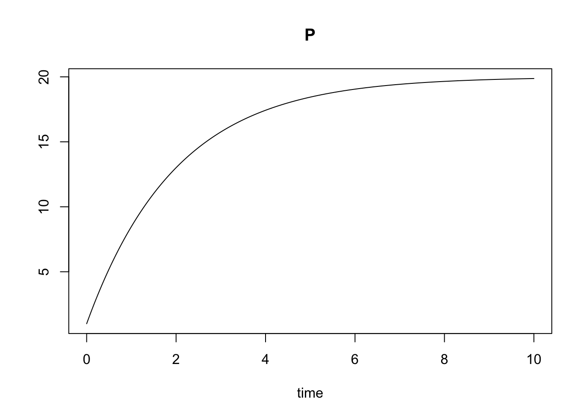
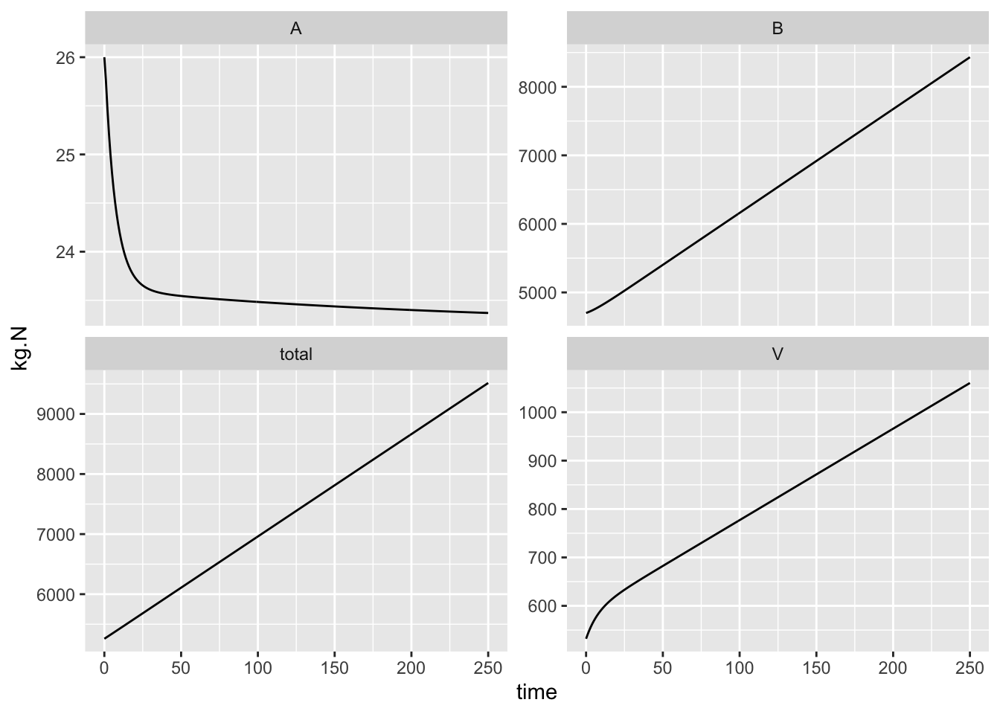

2 Introduction ecosystem models
Primary source: pp. 1-17, (in Chapters 1, 2 of Soetaert and Hermann 2009)
In this course, we’ll cover the very basics of ecosystem modeling. There are several goals I have for you, the reader. I hope that you,
- become more fluent in the discipline of ecosystem ecology; that you understand and can use basic terminology, and can identify quantitative pieces of the literature you read, and presentations you hear and see;
- understand and describe the quantitative and qualitative features of ecosystem dynamics and models of those dynamics;
- assess the relative merits of different modeling approaches and different mathematical formalisms of those approaches;
- create models of ecosystem dynamics of your own;
- write R code to implement ecosystem models.
To do all this, the following text relies heavily on selected secondary sources especially Soetaert and Herman (2009). I also cite selected primary sources where appropriate.
2.1 Why models?
In general, models are simplifications of reality. Useful models capture something useful about the reality we are interested in. A road map is a useful model of a road network. It captures just what we need. We model to aid understanding, because, at some level, the model is a quantitative and qualitative explanation for some phenomenon (Fig. 2.1). We can use models to test hypotheses, guide experiments, predict dynamics, and manage ecosystems and populations (Soetaert and Herman 2009).
Figure 2.1: We use conceptual and mathematical models to interpret reality. (Fig. 1.3 in Soetaert and Hermann, 2009).
2.2 What’s an ecosystem?
You can find definitions of an ecosystem elsewhere, but here we want to emphasize the abstraction of that ecosystem (Fig. 2.2). We will think of an ecosystem as a set of one or more compartments containing some mass of an element of interest, such as carbon or nitrogen. That element is the currency of the ecosystem. These compartments (a.k.a. pools, stocks) are connected by fluxes, or flows, the transfer per unit time of some mass of the element. When these transfers come from entirely outside the ecosystem, we refer to them as imports. When the transfer exits the system entirely, we refer to it as an exports. We model or describe an ecosystem as a set of pools or compartments, connected by fluxes, that is, transfers of energy or materials among pools.![*An ecosystem perspective of lake, in terms of phosphorus [@carpenter1992]. Boxes are ecosystem compartments and the quantities are pools (a.k.a. stocks, units are mass per unit area or volume). Arrows are fluxes (units are mass per unit time).*](figs/LakeEcosystemCarpenteretal1992.png)
Figure 2.2: An ecosystem perspective of lake, in terms of phosphorus (Carpenter et al. 1992). Boxes are ecosystem compartments and the quantities are pools (a.k.a. stocks, units are mass per unit area or volume). Arrows are fluxes (units are mass per unit time).
In Fig. 2.2, all pools are receiving imports from outside the system, represented by arrows coming from the amorphous cloud. All pools save dissolved P appear to export P back out. Dissolved P is receiving fluxes from all the animals in the system, and losing P to seston, which is primarily phytoplankton.
Ecosystem fluxes or flows are influenced by state factors such as temperature, time, or disturbance which act as constraints that can limit or speed up the fluxes or determine the current states of the variables (Fig. 2.3).
Figure 2.3: The current state of an ecosystem depends on state factors (Chapin III, Matson, and Mooney 2011).
2.3 What’s a model?
You’ve already seen ecosystem models. An ecosystem model consists of the compartments and fluxes we saw above. We refer to the currencies in different compartments as variables because they can vary or change through time. We use mathematical equations and computational controls to represent fluxes between compartments. In the equations, there are constants that we call parameters that control the rate of these fluxes. In principle, variables can usually be observed, whereas we cannot directly observe parameters and have to estimate them.
We describe an ecosystem using balance equations for each pool (p. 18, Soetaert and Herman 2009). A balance equation is simply a bookkeeping or budgeting device to keep track of fluxes and estimate parameters:
\[\mathrm{Change~in~pool} = \mathrm{Sources - Sinks}\] As models increase in complexity, we usually use differential equations, or time derivatives, to represent the balance equation for each pool or state variable in a model. For instance, the dissolved P in Fig. 2.2 could look like \[\frac{dD}{dt} = I + e_HH + e_N N + e_1 F_1 + e_2 F_2 - u_SS\] where \(D\) is the amount of P in the dissolved pool, perhaps in mg\(\cdot\)m\(^{-2}\), \(I\) is import, or source, from outside the system (dust? lake inflow?), and \(H\), \(N\), \(F_1\), and \(F_2\) are the other pools. The lower case letters are parameters or rate constants that are the mass-specific fluxes.
The units of \(dD/dt\) are mg\(\cdot\)m\(^{-2}\cdot\)d\(^{-1}\), and so each term (e.g., \(I\) or \(e_H H\)) in the equation must also have these same units.
- units of \(e_H H\) must be mg\(\cdot\)m\(^{-2}\)\(\cdot\)d\(^{-1}\).
- units of \(H\) are mg\(\cdot\)m\(^{-2}\).
- Ergo, units of \(e_H\) are d\(^{-1}\).
More intuitively, the units of these rate constants are milligrams per square meter per day, per milligram per square meter of lake (mg\(\cdot\)m\(^{-2}\cdot\)d\(^{-1}\) / mg\(\cdot\)m\(^{-2}\) in the lake). Note the quantities cancel out, and we are left with d\(^{-1}\).
See Soetaert and Herman (2009) section 2.1.4 for further explanation.
One nice feature of ecosystem ecology and ecosystem models is the emphasis on the conservation of mass and energy. We aim to track where everything comes from and where it goes. If we add up all of the rates of change for each pool, we should see that most of them cancel out, and we are left with only imports and exports. Doing this summation will tell us whether our model makes sense or we made a mistake. If we did not make any mistakes, it will tell us whether the entire system is a net sink or source of our currency. For instance, after simplifying the lake ecosystem model, we would have, \[\frac{dD}{dt} + \frac{dS}{dt} + \frac{dH}{dt} + \frac{dN}{dt} + \frac{dF_1}{dt} + \frac{dF_2}{dt} = \ldots \ldots = \mathrm{Imports - Exports}\]
See Soetaert and Herman (2009) section 2.1.3 for further explanation.
State factors also enter into the model, typically altering the fluxes. For instance, increasing atmospheric temperature might force a predictable change in our rate constants (e.g., \(e_H\), \(u_S\)) in the above model. Because temperature is an external factor forcing a change to a parameter, we often call its role in a model a forcing function. We will add temperature to a model later in the book.
To review: variables are quantities that change with time, such as the amount of carbon in the atmosphere, or the amount of phosphorus in the primary producers in a lake. Parameters are (typically) constants in equations that quantify how quickly the variables change. Forcing functions represent state factors that we think of as external to the ecosystem compartments.
No models apply everywhere, all the time. All models are limited for a specific domain and with specific boundaries. These are the spatial, temporal and conceptual limits on a model.
2.3.1 Other ideas
Statistical models (e.g., regression) often describe patterns in natural systems and help test hypotheses. They often represent a mechanistic process, but that is not typically their main goal. Process models (e.g., stock and flow models) also describe patterns in natural systems, but they include more mechanism and seek to describe mechanism and understand process. People sometimes call these mechanistic models.

Figure 2.4: A statistical model of aboveground plant biomass as a function of available soil nitrogen.
A theory is a well-supported hierarchical conceptual framework that contains clearly formulated postulates, from which a set of predictions logically follows. Efficient theory (Marquet et al. 2014) is based on first principles, and relies on as few assumptins as possible.
In contrast to theory, models are specific implementations of theory and specific descriptions of nature. Remember that in principle, all models are wrong, but some are useful1.
Exercise: Ask yourself whether a lake is a carbon sink or a source. Draw an appropriate compartment model to address this question. After having done so, ask yourself what assumptions you’ve made about the temporal and spatial scales. What mechanisms have you included? Why?
2.4 Steps in modeling
Soetaert and Herman (2009) identify a series steps that guides model development and ultimately improve understanding and prediction (Fig. 2.5).Figure 2.5: It is helpful to use a series of steps in improving our models. This was Figure 1.7 in Soetaert and Hermann (2009) but I chopped it in half. Read the left half (top to bottom), then the right half (top bottom).
In brief, I paraphrase or plagiarize their steps thus:
- Problem statement or question = narrow the focus of interest in a real system.
- System conceptualization = represent a real system as an abstraction.
- Model formulation = represent the conceptual model in mathematical form.
- Model verification = check internal consistency, consistency with physical laws of conservation, and ability to reproduce known solutions.
- Parameterization = use the literature or other sources to help determine numerical values for parameters; fine tuning these on the basis of model output is model calibration.
- Model calibration = use model output to fine tune model parameters, often referred to, or related to, model fitting.
- Sensitivity analysis = use model output to understand the effect of variation in parameters and state variables on dynamics.
Note that this figure contains a loop – after calibration and sensitivity analysis, we loop back the model structure and its parameters. In this class, you will use sensitivity analysis to identify the most interesting or most important parts of your model.
2.5 An example in R
Here we create a simple model to illustrate some of what we’ve been describing.
Consider our lake above, but as a whole – just one big pool of P. We’ll let the imports, \(I\), be constant and independent of the amount of the P in the lake. Our exports will depend on the amount of the P in the system-the more P in the system, to more can be exported. We will assume that a constant fraction, \(a\), is exported, \[\frac{dP}{dt} = I - a P\] In R, we write a function for the system of differential equations, and include descriptive comments.
## A function called 'lake' to represent an ordinary differential equation (ODE)
## to use with ode() in the deSolve package.
lake <- function( time, state_vars, parameters ){
## ODE function for a single pool (e.g., a lake) with a constant
## rate of import, and first-order export function (depends on the pool).
## The arguments time, state_vars, and parameters will be used by ode()
## to solve (numerically integrate) the system.
## I is the constant input rate
## a is the constant mass-specific loss rate
## P is the state variable
P <- state_vars[1] # state variable(s)
with(as.list(parameters), # tell R to look inside 'parameters'
{
dP.dt <- I -a*P # the balance eq. or rate func.
return( list( dP.dt ) ) # return the value of the rate function
})
}Next, we tell R what the values of the parameters are that we want. Let’s say the the import is 3 mg\(\cdot\)m\(^{-2}\cdot\)d\(^{-1}\), and that the fraction (or rate, really) is 0.5 d\(^{-1}\), or more intuitively, mg\(\cdot\)m\(^{-2}\cdot\)d\(^{-1}\) per mg\(\cdot\)m\(^{-2}\) in the lake. Note the quantities cancel out, and we are left with d\(^{-1}\).
## parameters
p <- c(I = 10, # constant input rate mg / m^2 / day
a = .5 # mass-specific output rate, day^-1
)Now the exciting part. We tell R our starting point and what time points we want to integrate for, and then solve the differential equation and have R return the result for the time points we want. After that, we display the first five time points.
initial.state <- c(P=1) # Initial concentration of P in the lake
t <- seq(from=0, to=10, by=1/24) # 10 days, in hourly increments
## solve the equation in func, using parameter values in p,
## starting at 'initial.state' and return the time points t
out <- ode(y=initial.state, times = t, func = lake, parms = p)
## display the first five rows of the solution
out[1:5,]## time P
## [1,] 0.00000000 1.000000
## [2,] 0.04166667 1.391740
## [3,] 0.08333333 1.775400
## [4,] 0.12500000 2.151151
## [5,] 0.16666667 2.519155Pictures are informative, so here we plot the result.
## simple graph of the time series
plot(out)
We can also use ggplot2 to make a pretty graph, and then save it.
out2 <- as.data.frame(out) # re-classify the data set
ggplot(data=out2, aes(x=time, y=P)) + geom_line()
ggsave("myLake.png", height=4, width=4)In very simple situations, we can solve the equilibrium by hand. By definition, the equilibrium is a state at which the system stops changing, that is, its rate of change is zero. To find a value of \(P\) which is an equilibrium, we set the balance equation equal to zero, and solve for \(P\): \[\frac{dP}{dt} = 0 = I -aP\] \[P^* = \frac{I}{a}\] By convention, we denote the equilibrium value of \(P\) with an asterisk, or “star,” as in “P-star.” We call this the analytical solution.
Questions:
- Is our graph consistent with the analytical prediction of \(P^*\)?
- Determine the units of \(I\) and \(a\); show your work and explain it to your cat.
In more complex systems, we often (typically?) can’t solve for the analytical solution. Instead, to find the same result, we usually run a model for a long period of time, until the state variables stop changing very much. Alternatively, if we have a model of a real ecosystem, we made be interested in its short term dynamics, in addressing questions related to experimental results, making predictions about the consequences of landscape management, or in using a time series to compare different models.
References
Box, G. E. P. (1979), “Robustness in the strategy of scientific model building,” in Launer, R. L.; Wilkinson, G. N., Robustness in Statistics, Academic Press, pp. 201–236.↩︎